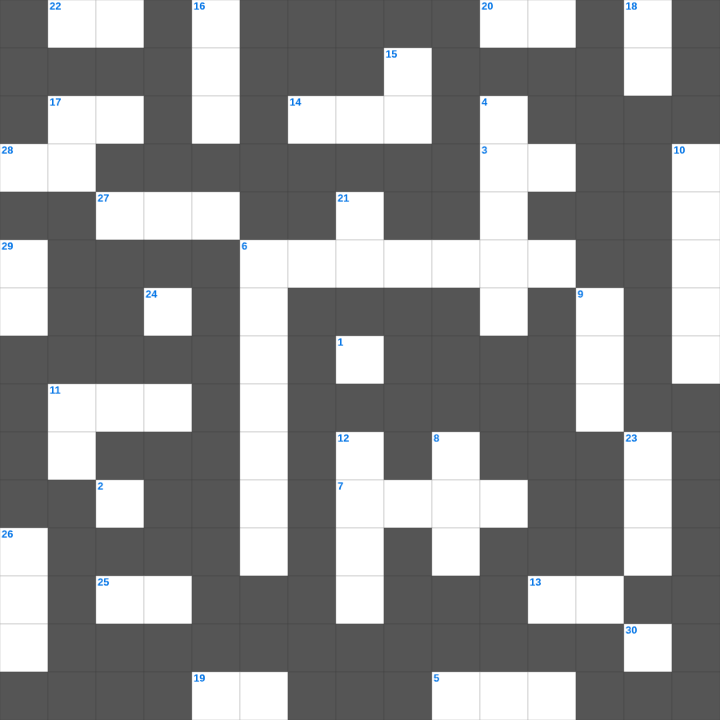

시편 마스터 100 (1/2)
📌 서비스 정의
십자가로세로는 교회 주보와 주일학교에서 사용할 수 있는 성경 기반 가로세로 퍼즐 서비스입니다. 성경 인물, 사건, 핵심 구절을 바탕으로 제작되었습니다. 온라인 풀이 및 인쇄 기능을 제공합니다.
📖 시편란?
시편은 다윗을 비롯한 여러 저자들이 쓴 150편의 기도와 찬양 모음집으로, 감사와 탄식, 회개와 신뢰 등 다양한 신앙의 감정을 담고 있습니다.
📚 시편의 주요 사건·주제
다윗의 탄식 시편들 · 찬양과 감사의 시편 · 메시아 예언 시편 · 회개의 시편(시 51편 등) · 성전 순례의 시편(성전에 올라가는 노래)
시편의 말씀을 퀴즈로 배우는 시편 성경 퍼즐입니다. 가로 힌트와 세로 힌트를 보고 35개의 단어를 맞춰보세요. 인쇄도 가능하고 정답 확인도 바로 되니 소그룹 모임이나 가정 예배 시간에도 활용하실 수 있습니다.

📝 가로 힌트
1. 너희는 믿지 않는 자와 멍에를 함께 메지 말라 이것과 불법이 어찌 함께 하며
3. 깊도다 하나님의 이것과 지식의 풍성함이여, 그의 판단은 측량하지 못할 것이며
5. 주는 가장 자비하시고 이것 여기시는 이시니라
6. 율법이 하나님의 약속들과 반대되는 것이냐 결코 이것이 아니라
7. 바울이 데살로니가에 갈 때 동행했던 인물들: 바울과 이것과 디모데
11. 고린도전서 13장의 별명
13. 너희는 믿음을 굳건하게 하여 그를 이것하라
14. 내가 그를 위하여 모든 것을 잃어버리고 이것으로 여김은 그리스도를 얻고 그 안에서 발견되려 함이니
17. 베드로전서 4장 7절: 만물의 마지막이 가까웠으니 무엇하라
19. 내게 특별히 그러하거든 하물며 육신과 주 안에서 상관된 네게랴
20. 그가 우리를 흑암의 권세에서 건져내사 그의 사랑의 아들의 이것으로 옮기셨으니
22. 바울이 게바를 책망하며 말하기를 '사람이 의롭게 되는 것은 이것의 행위로 말미암음이 아니요'
24. 허리는 백합화로 둘러싼 이것 더미 같구나
25. 이스라엘이 목이 이것 백성임을 잊지 말라
27. 요한삼서 1장 11절: 무엇을 본받지 말라 했나
28. 바울이 자신을 소개할 때: 하나님의 종이요 예수 그리스도의 이것인 나 바울
30. 베드로전서 4장 14절: 너희가 그리스도의 이름으로 치욕을 당하면 이것 있는 자로다
📝 세로 힌트
2. 내가 너희에게 쓸 것이 많으나 종이와 이것으로 쓰기를 원하지 아니하고
4. 만왕의 왕이시며 만주의 주시요 오직 그에게만 이것이 있고
6. 바울이 갈라디아 인들을 위해 다시 이것 하는 해산의 수고를 하노라 함
8. 바울이 디도를 부른 별칭: 같은 믿음을 따라 나의 이것 된 디도
9. 그들의 총명이 어두워지고 그들 가운데 있는 무지함과 그들의 마음이 이것함으로 말미암아 하나님의 생명에서 떠나 있도다
10. 경기하는 자가 법대로 경기하지 아니하면 이것을 얻지 못할 것이며
11. 형제 사랑에 관하여는 너희에게 쓸 것이 없음은 너희 자신이 하나님의 가르치심을 받아 서로 이것함이라
11. 지식은 교만하게 하며 이것은 덕을 세우나니
11. 고린도 교회 제사 음식 문제의 핵심: 지식보다는 이것
12. 요한삼서 1장 5절: 가이오가 나그네들에게 행한 일의 성격
15. 네가 이 세대에서 부한 자들을 명하여 마음을 높이지 말고 정함이 없는 이것에 소망을 두지 말고
16. 바울이 고린도 교회에 편지를 보낸 이유 중 하나: 이 사람의 집 편으로 들은 분쟁 소식 때문
17. 야고보서의 마지막 주제
18. 맡은 자들에게 구할 것은 이것이니라
21. 여러 사람들이 그리스도 십자가의 이것으로 행하느니라
23. 성전 수리 중 발견한 율법책으로 개혁을 일으킨 왕
26. 예레미야를 박해했던 제사장
29. 하나님이 이 모든 일로 말미암아 너를 이것 하실 줄 알라
🧩 이 퍼즐에서 배우는 내용
이 퍼즐은 시편 마스터 100 (1/2)의 핵심 단어와 개념을 자연스럽게 복습할 수 있도록 구성되었습니다. 주일학교 수업이나 개인 성경공부에서 학습 내용을 점검하는 용도로 바로 활용할 수 있습니다.
🧑🏫 교회 교육 자료 활용
이 퍼즐은 주일학교 교재 추천 자료로 활용할 수 있고, 주일학교 주보에 넣기 좋은 분량으로 구성되어 있습니다. 수업용 주일학교 교안에 활동지로 붙이거나, 예배 후 복습용 주일학교 공과교재로 바로 사용할 수 있습니다.
🏷️ 키워드
시편 성경 퍼즐, 시편, 십자가로세로, 성경퀴즈, 말씀퀴즈, 가로세로퍼즐, 주일학교 교재 추천, 주일학교 주보, 주일학교 교안, 주일학교 공과교재